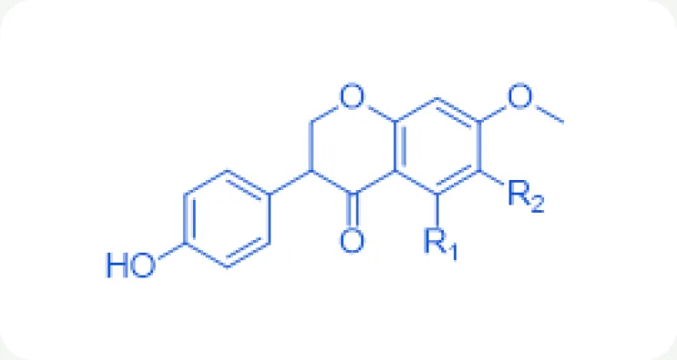
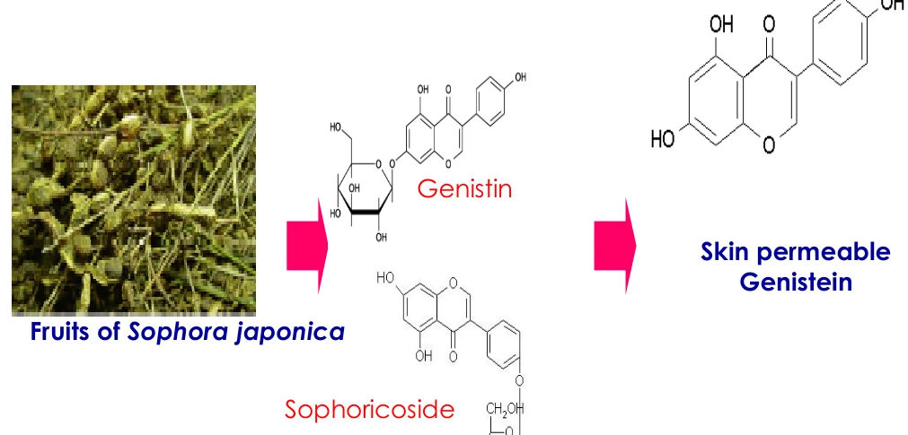
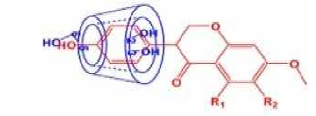
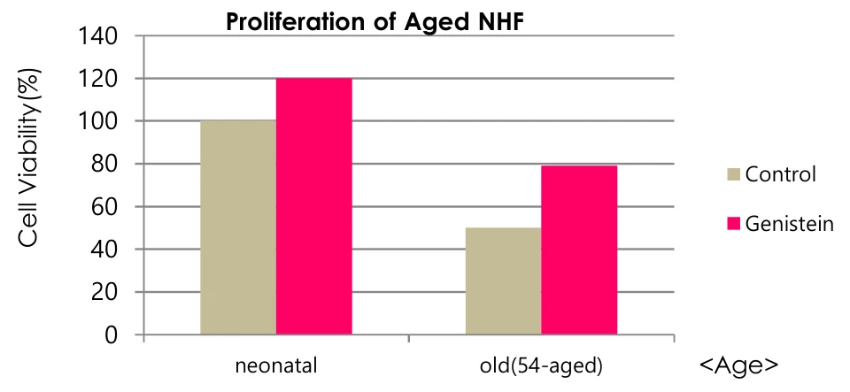
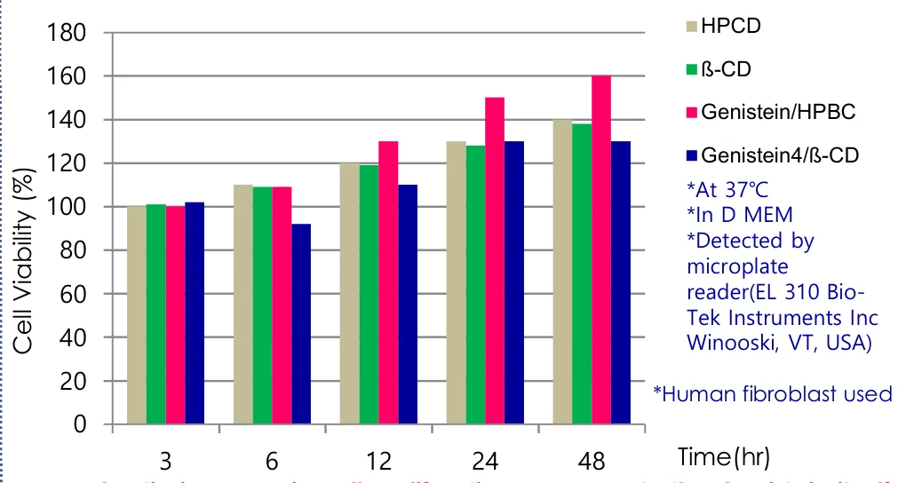

HOME
HOME- 원료소개
- 화장품원료
- Gen90nano
Ingredient research
Gen90nano
제형 적용이 용이한 제니스테인 포접체
01 / Overview & Strengths
개요 & 특장점
- Genistein은 Isoflavone의 일종으로 UV 손상의 치료뿐만 아니라 5-α 환원 효소의 억제 작용을 함으로써 화장품 분야에서 주름방지제로서의 기능을 하는 물질입니다.
- 본 제품은 Aglycone 타입 Genistein으로 일반 Glycosidic 타입 대비 피부 침투력이 좋습니다.
※ 자세한 자료는 직접 문의 부탁드립니다.
Product features / Product Strengths
- 여드름 개선 효과
- 탈모 방지 효과
- 항염 효과
- 미백 효과
- UV 손상 치유 효과
- 주름 방지 효과

02 / Technical Information
기술 자료
원료 기본 규격 및 제품 카탈로그
- INCI Name
- Genistein, Hydroxypropyl Cyclodextrin
- CAS No.
- 446-72-0
- M.O.Q.
- 1KG
- Pack Size
- 1/10/20KG
- Appearance
- Powder
- Dosage
- 0.1~5%
- Genistein
- 5%
- 특징
- Genistein과 Hydroxypropyl Cyclodextrin(HPCD)의 포접체. 물에 잘 녹는 성질을 가졌으며 제형이 용이함
원료 기본 규격 및 제품 카탈로그
- INCI Name
- Genistein, Butylene Glycol
- CAS No.
- Each
- M.O.Q.
- 1KG
- Pack Size
- 1/10/20KG
- Appearance
- Liquid
- Dosage
- 0.1~5%
- Genistein
- 1%
- 특징
- Solution type으로 Genistein이 1% 포함
03 / Research Data
기타 데이터
Introduction
- Genistein?이소플라본의 한 종류로, 여러 연구를 통해 안전성과 효능이 입증되었습니다. 화장품에서 주름 개선 성분으로 쓰이며, 자외선 손상 회복과 5-α 환원효소 억제 작용을 합니다.
- “Bioconversion”대부분의 식물에서 제니스테인은 Genistin, Sophoricoside 같은 배당체(glycosidic, 당 결합) 형태로 존재합니다. 비배당체(aglycone, 당 없음) 형태가 활성과 피부 투과성이 훨씬 높아, 마크로케어는 “특수 효소 기술”로 비배당체 형태로 전환했습니다.

Efficacy of Gen90Nano주요 효능
- 콜라겐 합성 · 주름 개선
- 미백 · 자외선 손상 회복
- 여드름 완화
- 탈모 방지
- 항염
- 효소 처리로 피부 투과성을 높인 이소플라본
- Cyclodextrin 포접 기술로 물에 녹고 투명한 외관

Cyclodextrin Inclusion Complex
사이클로덱스트린 포접 복합체
제니스테인을 사이클로덱스트린 안에 포접해 물에 녹고 투명한 외관을 확보합니다.

노화 섬유아세포(Aged NHF)에 제니스테인 처리(10㎍/㎖, 3일) 후 세포 증식이 50% 증가

제니스테인 단독 대비 세포 증식이 크게 증가 (37℃ · DMEM · 인간 섬유아세포)
Commercialized Genistein Products
| 구분 | Gen90Nano | Gen90S |
|---|---|---|
| Appearance | Powder (HPCD Inclusion) | Liquid (1,3 BG solution) |
| Color | Yellowish to brownish white | Pale yellow to brown |
| Genistein Content | 5% | 1% |
| Water solubility | Soluble | Easily Dispersible |
| Application | 투명한 외관의 제품 | 제품 전반 |